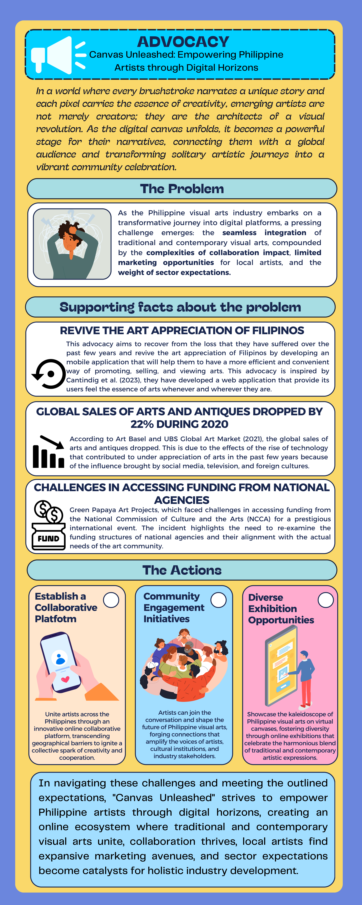

References
- Catindig, A., Dela Cruz, J., Felicen, J., & Villamin, H. (2023). I-Sining: An online platform for Filipino artists. ResearchGate. https://www.researchgate.net/publication/367225623_i-Sining_An_Online_Platform_for_Filipino_Artists
- Chikiamco, C. (2010, May 24). The struggle for Philippine art - then and now. Philstar.com; Philstar.com. https://www.philstar.com/lifestyle/arts-and-culture/2010/05/24/577469/struggle-philippine-art-then-and-now
- Manila Bulletin. (2021, October 8). PH visual arts sector needs additional support - lower house panel. Manila Bulletin; MANILA BULLETIN. https://mb.com.ph/2021/10/08/ph-visual-arts-sector-needs-additional-support-lower-house-panel